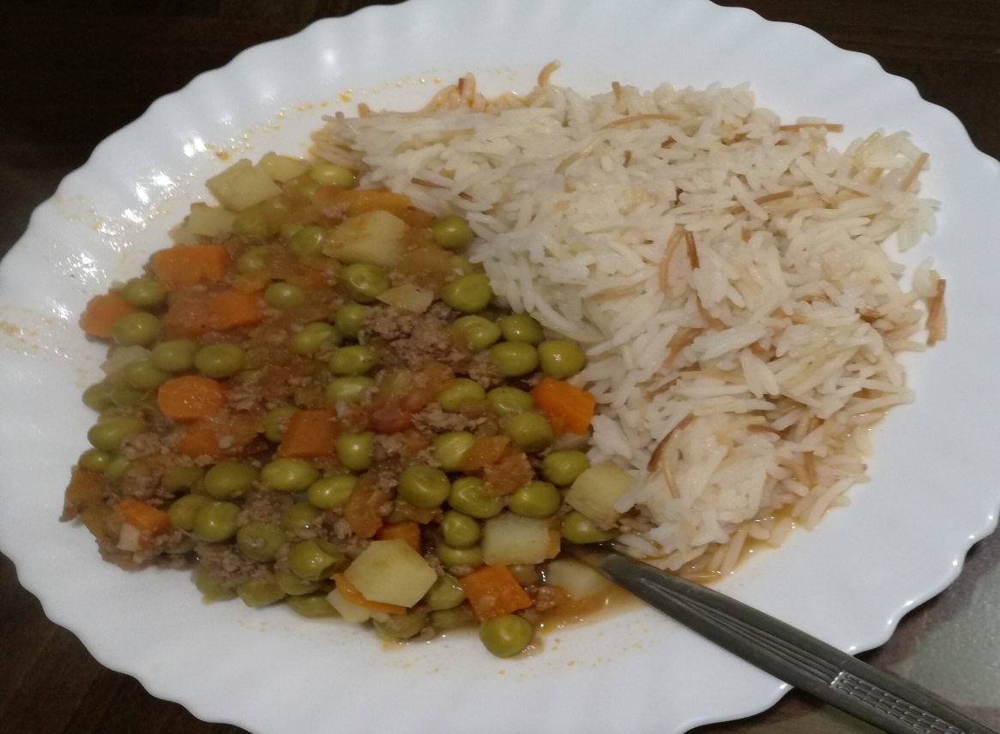

Bazella w Rez

Description
This is one of the most delicious lebanese dishes
Ingredients
- Basali wasat
- 3 hsous toum
- Nos koub zait
- 400g tomate bl 3elab m2atta3
- 250g lahm mka3abet
- 500g bazella w jazar mjallad
- Nos ras wasat batata
- 0.5 mal3a2a z8iri bhar 7elo
- 0.5 mal3a2a zghiri 2erfi
- Mal3a2a kbiri mel7
- 0.75 3elbit dora wasat
Steps
- Basal + toum (ser3a 5, 10 seconds)
- Zayt + frashi (ser3a1.5 , 5 min, varoma), ba3d 1 min menot l lahmi shway shway +ml7+2erfi+bhar. Bala koub la ten2eli
- May lal 1.25 litres, (ser3a 1.5, 15 min, var ) ma3 koub. B 2e5er d2i2a men7ot l tomate.
- Men2os l batataa mtl 7ajm l bazella
- Kel shi be2i men7otto bl salli w menzid l may la ton8omir l salli, (ser3a 1, 15 min, var) bs ye8lo menbarmij (ser3a1, 45 min, 7arara 70)
- Bs yo5laso fina nsaffi l may w ma nhotta kella